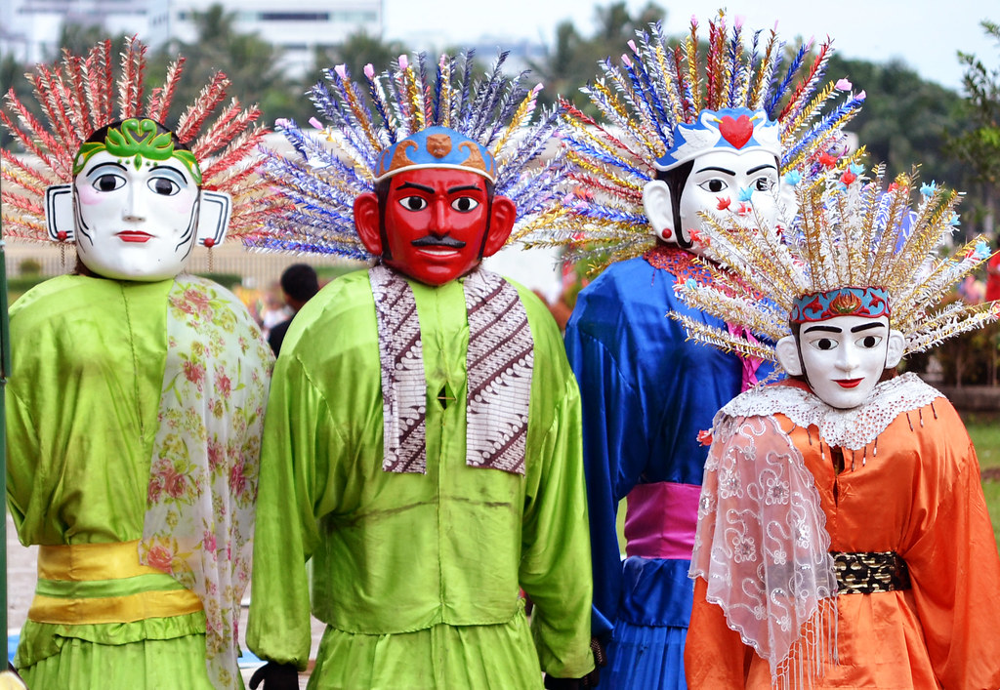
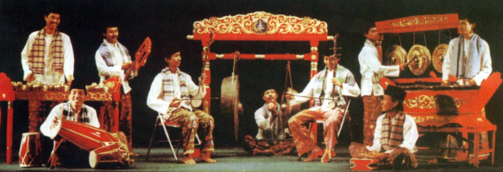

Kebudayaan Indonesia
Informasi lengkap tentang kebudayaan Indonesia yang memberikan keistimewaan etnik yang menarik.
- Tari Kecak - Tarian tradisional Bali yang terkenal dengan suara "cak" yang dihasilkan oleh para penari laki-laki. Di tahun 1930-an, seniman Bali bernama Wayan Limbak dan pelukis asal Jerman bernama Walter Spies menciptakan tarian kecak. Tarian ini terinspirasi dari ritual tradisional yang dilakukan masyarakat Bali yang kemudian diadaptasi dalam cerita Ramayana dalam kepercayaan Hindu untuk dipertontonkan sebagai pertunjukkan seni saat turis datang ke Bali. Tari kecak biasanya dilakukan oleh puluhan laki-laki bertelanjang dada dan mengenakan kain kotak-kota di pinggang hingga atas dengkul. Tari kecak merupakan ritual shangyang atau tradisi menolak bala yang diselipkan kisah Ramayana di dalamnya. Tari kecak menceritakan tentang pencarian Permaisuri Shinta, Raja Rama dibantu oleh Hanoman. Hanoman lalu memporakporandakan tempat penyekapan Permaisuri Shinta dengan membakarnya. Namun Hanoman justru terkepung oleh prajurit Raja dan Rahwana dan hampir terbakar. Pada awalnya Raja Rama mengalami kekalahan, tetapi tidak menyurutkan kesungguhan Raja Rama menyelamatkan permaisurinya. Raja Rama berdoa dengan sungguh dan kemudian berusaha kembali. Pada akhirnya Raja Rama dapat menyelamatkan Permaisurinya.
- Upacara Ngaben - Upacara kremasi di Bali yang merupakan bagian dari ritual keagamaan Hindu. Upacara Ngaben merupakan ritual yang dipercaya oleh masyarakat Pulau Dewata untuk mengembalikan roh orang yang sudah meninggal kembali ke alam asalnya dengan lebih cepat dibandingkan dengan penguburan biasa lewat tanah. Berdasarkan etimologi, kata “ngaben” sendiri konon berasal dari kata “ngabu” yang bisa diartikan sebagai “menjadi abu”. Hal ini tentunya sesuai dengan prinsip dasar Upacara Ngaben, di mana mayat seseorang akan dibakar sampai tidak tersisa apapun dari badannya dan akan menjadi abu. Masyarakat Pulau Bali, yang mayoritas merupakan umat Hindu, punya kepercayaan bahwa terdapat 5 komponen untuk membentuk badan manusia. 5 komponen ini disebut juga dengan istilah “Panca Maha Bhuta” atau dalam istilah modern lebih dikenal dengan sebutan “elemen klasik”.
- Tradisi Betawi - Tradisi Betawi memiliki ciri khas yang kuat dan penting dalam kebudayaan Indonesia. Namun seiring perkembangan jaman membuat tradisi ini juga semakin tersingkir. Karena itu, upaya untuk mempertahankan kebudayaan dan identitas suku Betawi terus dilakukan. Suku Betawi adalah kelompok etnis yang berasal dari daerah Jakarta, Indonesia. Mereka adalah keturunan dari berbagai suku yang datang ke Jakarta pada masa lampau, seperti suku Jawa, Sunda, Melayu, Tionghoa, dan Arab. Orang Betawi memiliki kebudayaan, adat istiadat, bahasa, dan kuliner khas yang berbeda dari suku-suku lain di Indonesia. Seperti seni musik gambang kromong, tari topeng Betawi, dan wayang orang Betawi, Ondel-ondel. Selain itu, kuliner tradisi Betawi juga terkenal di Indonesia, seperti nasi uduk, ketoprak, soto Betawi, dan kerak telor.  